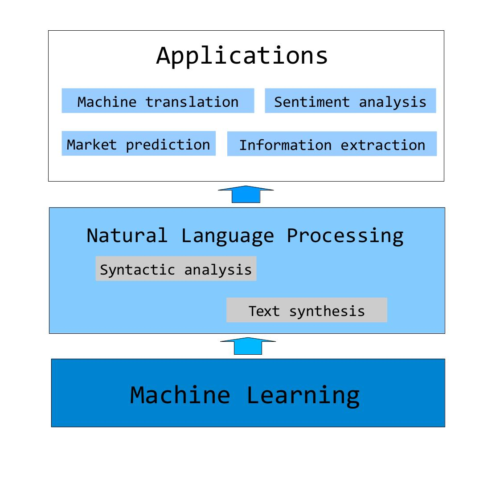

Biography
I currently work as an associate professor at Westlake University. From Jul 2012 to Aug 2018, I worked as an assistant professor at Singapore University of Technology and Design (SUTD). Before joining SUTD, I worked as a postdoctoral research associate at University of Cambridge. I received my PhD degree from University of Oxford in Dec 2009, working on statistical Chinese processing for my thesis. I received my MSc degree from University of Oxford in Oct 2006, working on statistical machine translation from Chinese to English by parsing (MSc thesis). I received my undergraduate degree on Computer Science from Tsinghua University, China.Research Interesets
My research interests include natural language processing, its underlying machine learning algorithms and downstream applications. I serve as reviewer for top journals such as Computational Linguistics, Transaction of Association of Computational Linguistics (action editor), IEEE Transaction on Big Data (associate editor), ACM Transactions on Asian and Low Resource Language Information Processing (associate editor) and Journal of Artificial Intelligence Research. I am also PC member for conferences such as ACL, COLING, EMNLP, NAACL, EACL, AAAI and IJCAI. I am a PC co-chair of EMNLP (2022) and CCL (2020), and the area chairs of ACL (2017/18/19/20/21), COLING (2014/18), NAACL (2015/19/21), EMNLP (2015/17/19/20), EACL (2021) and IJCAI (2021). I won the best paper awards of IALP (2017), COLING (2018) and best paper honor able mention of SemEval (2020).Book and Teaching
My textbook "Natural Language Processing - A Machine Learning Perspective" is published with cambridge university press. I record a Chinese online course (Teaching Material) using this book.
